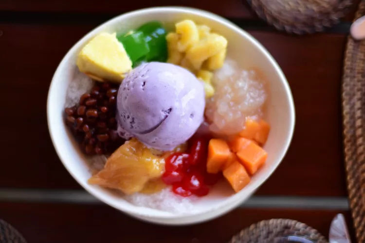

A signature dessert of the Philippines, halo-halo features layers of condensed milk, shaved ice, sweetened beans, fruit, and much more. Read on to learn how to put this refreshing treat together
Ingredients
- Shaved ice A crucial ingredient for both its cold temperature and its crunchy texture.
- Evaporated milk: This ingredient adds both sweetness and a rich, creamy consistency.
- Plantains (or bananas): Halo-halo often includes saba plantains cooked in sugar syrup to both soften and sweeten them.
- Ube (or yams): A layer of cubed purple yams is common in halo-halo, and some versions also include ube jam and a scoop of ube ice cream on top.
- Beans: This ingredient might surprise those who aren't used to halo-halo, but sweetened beans (either red beans or mung beans) lend a welcome chewy texture.
- Coconut: Some recipes utilize shaved coconut, others contain coconut gelatin, but most feature some coconut element.
- Sugar palm fruit and/or jackfruit: These fruits grow abundantly throughout the Philippines, so it stands to reason that they constitute a layer of halo-halo.
- Flan: Not all versions of halo-halo use flan as an ingredient, but some include both this custardy dessert and a scoop of ube ice cream as toppings.
Directions
- Start by placing a base layer of sweetened ingredients in a tall glass
- Pack the glass with finely shaved or crushed ice, ensuring it is filled to the brim
- Drizzle the ice with a mixture of evaporated milk and sweetened condensed milk (or coconut milk) to moisten the layers
- Top the dessert with ube halaya (purple yam jam), a scoop of ube ice cream, and a slice of leche flan
- Serve immediately with a long spoon so diners can mix the ingredients from the bottom up, which is the traditional way to eat it.